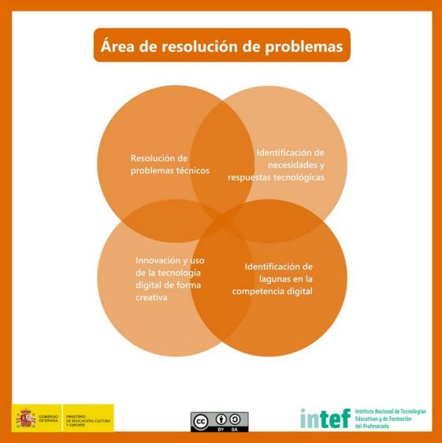

Área de competencia 5. Resolución de problemas
Identificar necesidades de uso de recursos digitales, tomar decisiones informadas sobre las herramientas digitales más apropiadas según el propósito o la necesidad, resolver problemas conceptuales a través de medios digitales, usar las tecnologías de forma creativa, resolver problemas técnicos, actualizar su propia competencia y la de otros.

Resolución de problemas técnicos
Identificar posibles problemas técnicos y resolverlos (desde la solución de problemas básicos hasta la solución de problemas más complejos).
NIVEL BÁSICO:
- Conoce las características de los dispositivos, herramientas, entornos y servicios digitales que utiliza de forma habitual en su trabajo como docente y es capaz de identificar un problema técnico explicando con claridad en qué consiste el mal funcionamiento.
Identificación de necesidades y respuestas tecnológicas
Analizar las propias necesidades en términos tanto de uso de recursos, herramientas como de desarrollo competencial, asignar posibles soluciones a las necesidades detectadas, adaptar herramientas a las necesidades personales y evaluar de forma crítica las posibles soluciones y herramientas digitales.
NIVEL BÁSICO:
- Utiliza algunas herramientas y recursos digitales para atender necesidades de aprendizaje y resolver problemas tecnológicos relacionados con su trabajo docente habitual.
- Toma decisiones a la hora de escoger una herramienta digital para una actividad rutinaria docente.
Innovación y uso de la tecnología digital de forma creativa
Innovar utilizando la tecnología digital, participar activamente en producciones colaborativas multimedia y digitales, expresarse de forma creativa a través de medios digitales y de tecnologías, generar conocimiento y resolver problemas conceptuales con el apoyo de herramientas digitales.
NIVEL BÁSICO :
- Sabe que puede usar las tecnologías digitales en su labor profesional habitual para buscar soluciones alternativas e innovadoras que faciliten las tareas de aprendizaje.
- En alguna ocasión las utiliza de forma creativa.
Identificación de lagunas en la competencia digital
Comprender las necesidades de mejora y actualización de la propia competencia, apoyar a otros en el desarrollo de su propia competencia digital, estar al corriente de los nuevos desarrollos.
NIVEL BASICO: Identifica las carencias del alumnado en el uso de medios digitales con fines de aprendizaje, así como las propias en cuanto al uso de tecnologías se refiere

Ciudadanía digital por Alfabetizacion: INTEF www.http://aprende.intef.es/ y Privacidad: OSI Oficina de Seguridad del Internauta bajo licencia Creative Commons Reconocimiento-NoComercial-CompartirIgual 4.0 Internacional License.